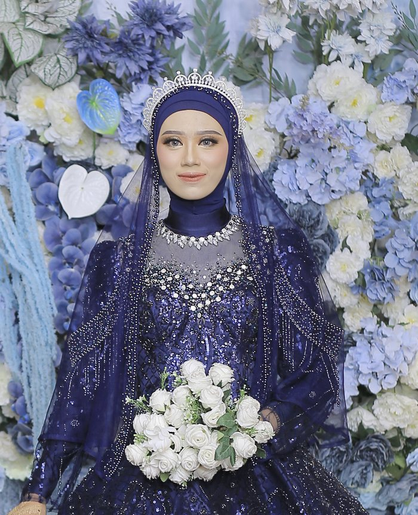
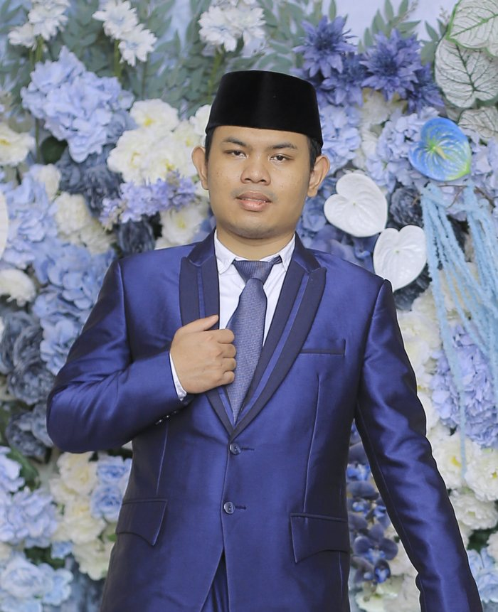
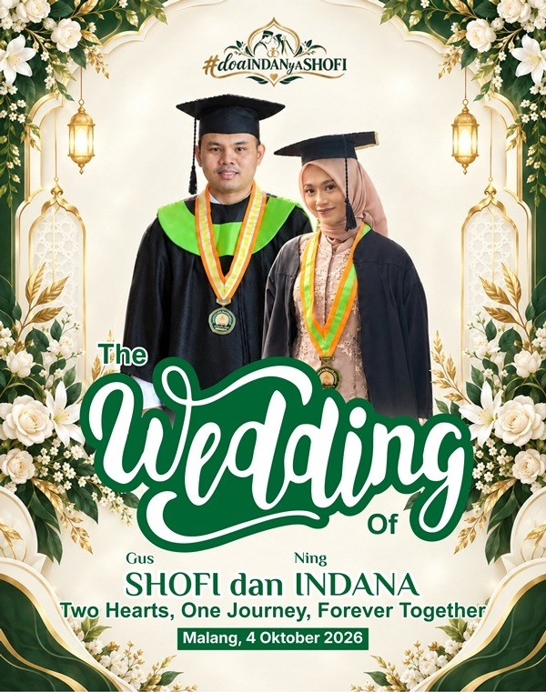
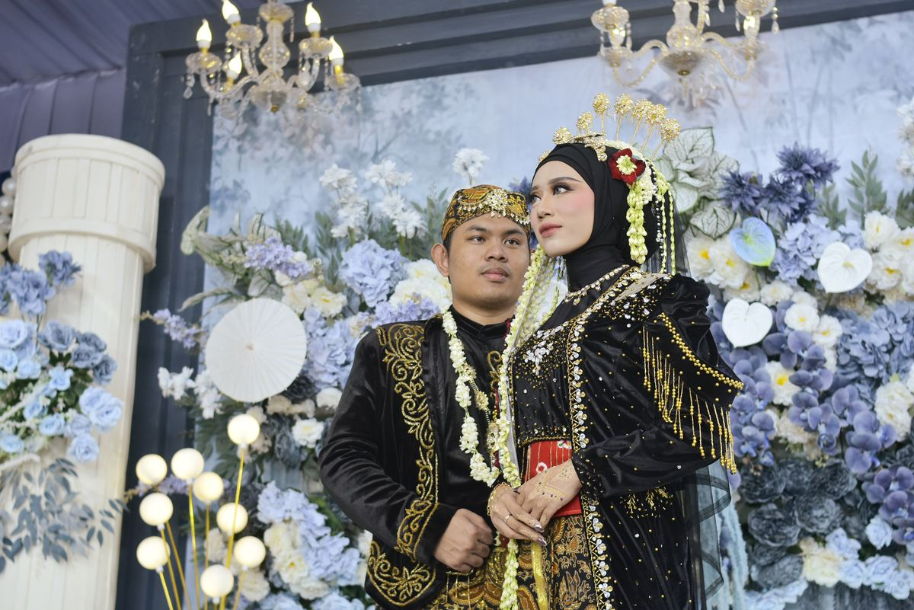
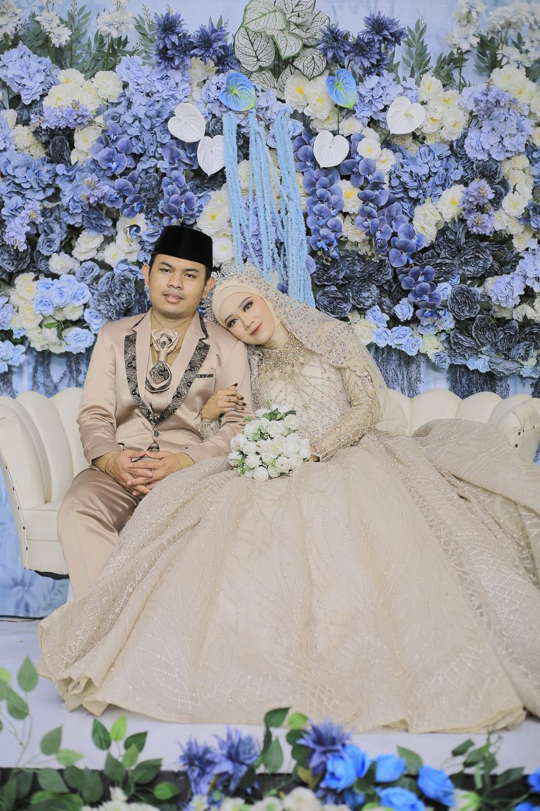
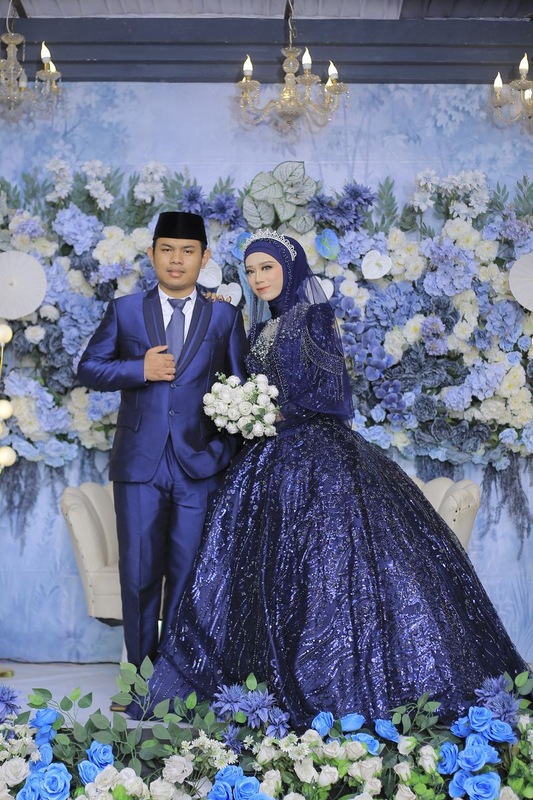
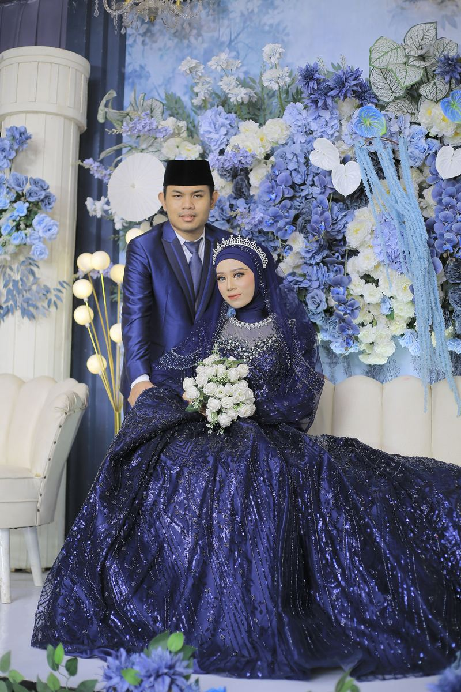
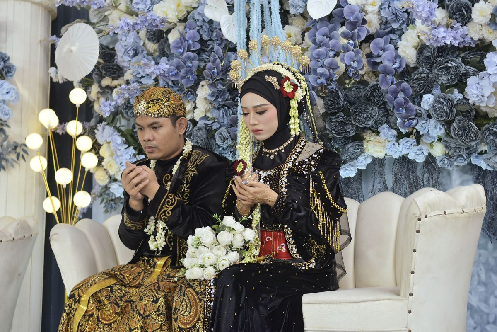
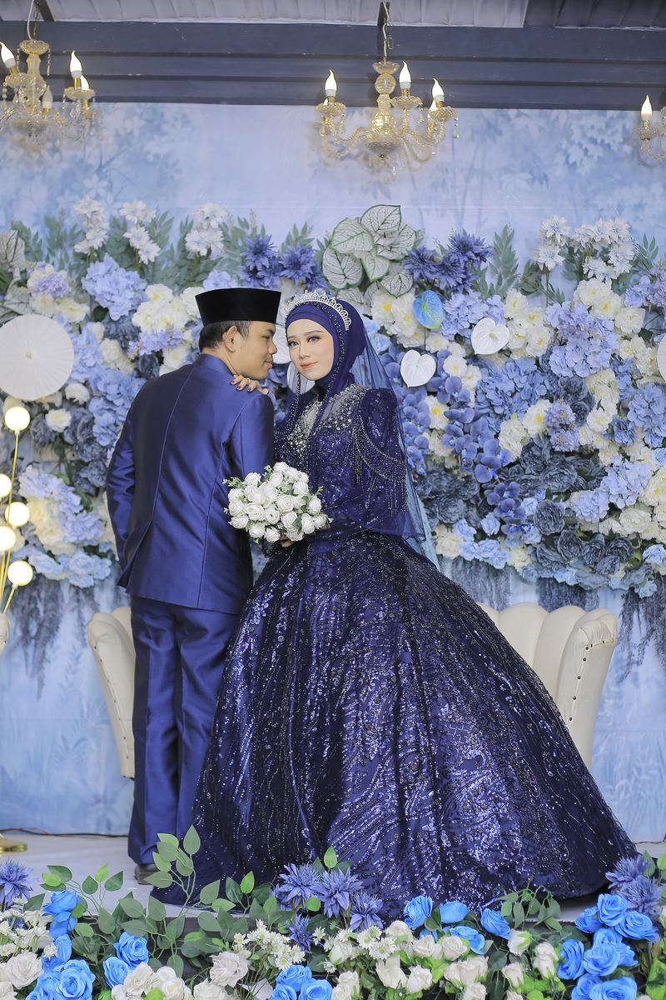
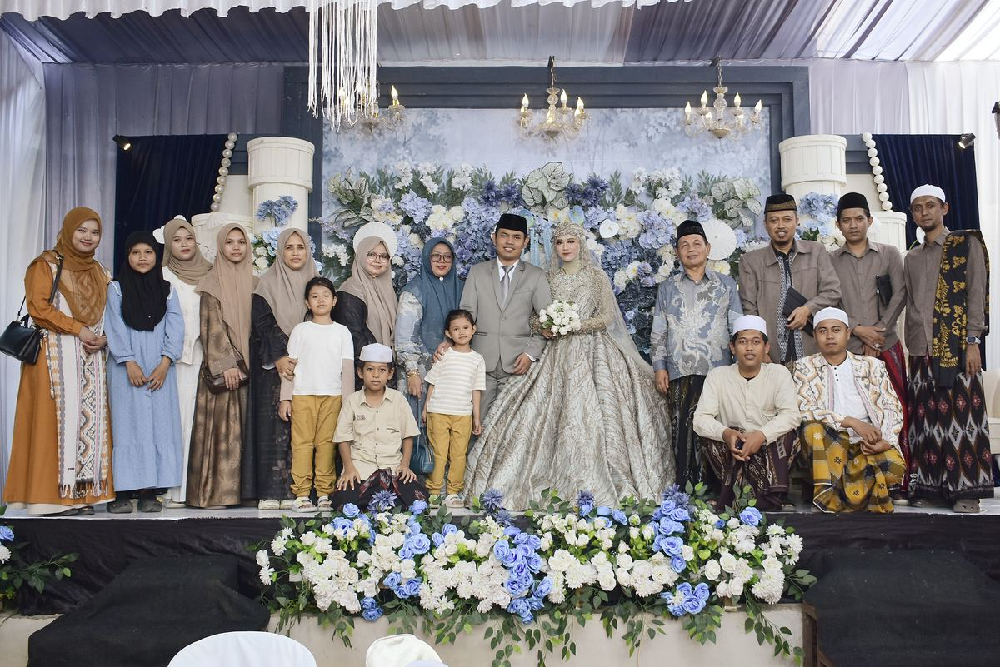

Walimatul 'Ursy
Shofi & Indana
04 . 10 . 2026
Kami mengundang Anda untuk berbagi kebahagiaan di hari istimewa kami.
Bismillahirrahmanirrahim
“Dan di antara tanda-tanda (kebesaran)-Nya ialah Dia menciptakan pasangan-pasangan untukmu dari jenismu sendiri, agar kamu cenderung dan merasa tenteram kepadanya, dan Dia menjadikan di antaramu rasa kasih dan sayang.”
QS. Ar-Rum : 21
Assalamu'alaikum Warahmatullahi Wabarakatuh
Dengan memohon rahmat dan ridho Allah SWT, kami bermaksud menyelenggarakan pernikahan putra-putri kami:

Ning Indana
Indana Zulfa, S.Pd.
Putri pertama dari
Bapak Fathur Rahman & Ibu Farikhah
(Probolinggo)
&

Gus Shofi
Shofi Mustajibullah
Putra dari
Drs. K.H. Abdul Mannan Qoffal, M.Pd. & Nyai Hj. Habibah Khozin
Menuju Hari Bahagia
Alhamdulillah, hari bahagia telah tiba 🤍
Rangkaian Acara
Diharapkan kehadirannya pada:
Minggu, 04 Oktober 2026
15.30 – 21.00 WIB
SMK Al-Khozini
Ganjaran, Kec. Gondanglegi, Kab. Malang, Jawa Timur
Our Story
Dahulu
Satu Organisasi
Kami lebih dulu dipertemukan dalam satu organisasi dan beberapa kali dipercaya mengemban tanggung jawab di kegiatan yang sama. Komunikasi yang terjalin perlahan menumbuhkan kedekatan.
Suatu Hari
Candaan Teman
Ia kalah dalam sebuah permainan bersama teman-temannya, dan hukumannya adalah mengunggah foto profil Indana di status WhatsApp. Sejak itu teman-teman mulai menjodoh-jodohkan kami, meski saat itu dianggap hanya gurauan.
Niat Baik
Memberanikan Diri
Dengan penuh keberanian, ia menyampaikan niatnya kepada orang tua Indana untuk menjadikannya pendamping hidup. Ia mengaku telah menyukai Indana sejak pertama kali bertemu.
Awal 2025
Lamaran
Kami melangkah ke tahap lamaran.
26 September 2026
Mengikat Janji Suci
Dengan penuh rasa syukur, kami menyempurnakan ibadah dengan ikatan pernikahan.
Semoga Allah Swt menjadikan pernikahan ini ibadah yang panjang, dipenuhi sakinah, mawaddah, dan rahmah.
Galeri Kami








Merupakan suatu kehormatan dan kebahagiaan bagi kami apabila Bapak/Ibu/Saudara/i berkenan hadir dan memberikan doa restu kepada kedua mempelai.
Wassalamu'alaikum Warahmatullahi Wabarakatuh
Kami yang berbahagia
Shofi & Indana
Keluarga Besar Bapak Fathur Rahman
& Keluarga Besar K.H. Abdul Mannan Qoffal
Dibuat dengan ♥ · #doaINDANyaSHOFI